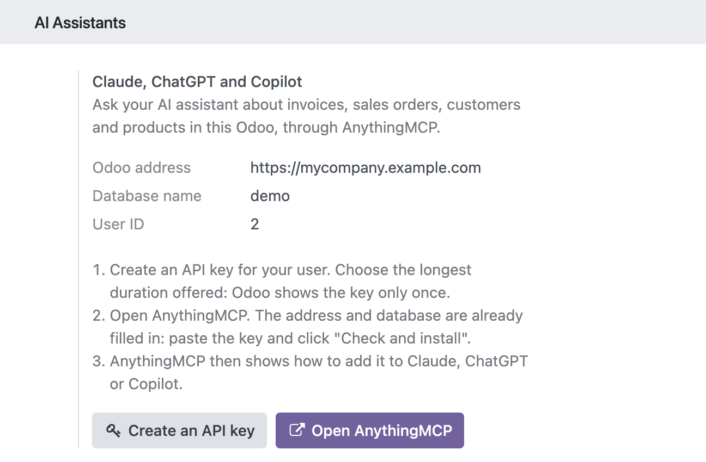

Ask your AI assistant about invoices, sales orders, customers and products, and get answers from your live Odoo data. AnythingMCP connects Odoo to AI assistants over MCP (Model Context Protocol). This module sets it up from Odoo's Settings in three steps, without code.

The assistant reads and writes through your own Odoo user and API key, so it sees and changes only what that user may.
On Odoo 19 and later AnythingMCP uses Odoo's JSON-2 API; on Odoo 17 and 18 the JSON-RPC API.
anythingmcp_connector.url to your instance's address.Write to support@anythingmcp.com or read the guide at anythingmcp.com/marketplace/odoo. Made by helpcode.ai GmbH, Freiburg, Germany.